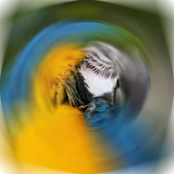

Rozmycie obiektywu

Obrotowe rozmycie, które pozostawia ostry obszar wokół środka i narasta ku krawędziom.
Ustawienia
| Ustawienie | Typ | Zakres | Domyślnie |
|---|---|---|---|
| Środek | Punkt (X, Y) | Od -1 do 2 | 0.5, 0.5 |
| Kąt | Kąt | Od 0° do 360° | 10° |
| Promień | Liczba | Od 0 do 2 | 0.25 |
| Wtapianie | Liczba | Od 0 do 2 | 0.25 |